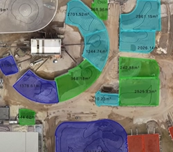
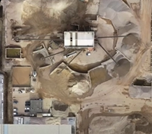
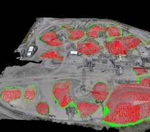
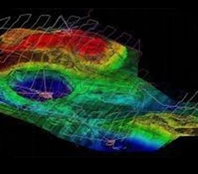
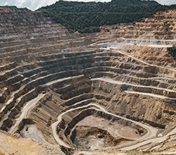

Deliverables

Detailed Project Reporting (DPR)
We deliver Detailed project reports for mining endeavors, leveraging drone surveys to furnish detailed insights into terrain mapping, accurate stockpile volume measurement, and ongoing site monitoring. Our reports ensure informed decision-making and optimize operational efficiency in mining projects.

DTM
We offer comprehensive Digital Terrain Models (DTM) derived from drone surveys tailored for mining projects. Our DTM solutions provide detailed elevation data, enabling precise terrain mapping, volume calculations, and site planning to optimize mining operations and support informed decision-making for sustainable resource extraction.

Stockpile Volume Measurement
Drones offer rapid and precise volume measurements of mined material stockpiles, including ore, coal, or aggregates. This data is indispensable for efficient inventory management, strategic production planning, and ensuring accurate financial reporting, enhancing operational efficiency and decision-making in the mining industry.

Orthomosaic
we create orthomosaic for highway construction using drone-captured aerial imagery stitched together using photogrammetry software for comprehensive site visualization and analysis.Orthomosaic imagery from drones enhances highway construction by providing detailed, accurate visual data for planning, monitoring, and quality assurance.

DSM
We specialize in delivering Digital Surface Models (DSM) derived from drone surveys specifically designed for mining projects. Our DSM solutions offer detailed terrain mapping, facilitating accurate stockpile volume measurement and strategic site planning to enhance productivity and efficiency in mining operations.

Aerial Photogrammetry and Videography
We specialize in aerial photography and videography services using drones for mining projects. Our high-quality imagery and videos offer valuable visual documentation, aiding in project planning, monitoring, and communication for efficient decision-making throughout the mining process

Topographical Survey
We specialize in providing topographic surveys using drone technology integrated with Differential Global Positioning System (DGPS) for mining projects. Our surveys deliver highly accurate terrain mapping, facilitating precise resource estimation, site planning, and operational optimization to enhance productivity and efficiency in mining operations

Blast Monitoring and Fragmentation Analysis
We offer blast monitoring and fragmentation analysis services using drones tailored for mining projects. Our solutions provide real-time monitoring of blasting operations and detailed analysis of rock fragmentation, enhancing safety and optimizing productivity in mining activities.

Lidar Survey
LIDAR surveys for highways yield detailed topographic data crucial for precise route planning, infrastructure design, and safety assessment. This information guarantees the implementation of optimal construction and maintenance practices, enhancing overall efficiency and safety standards.

Pit and Highwall Inspections
We specialize in pit and highwall analysis services using drones for mining projects. Our solutions offer detailed inspections of open-pit mines and highwalls, providing valuable insights to ensure safety, assess stability, and optimize operational efficiency.